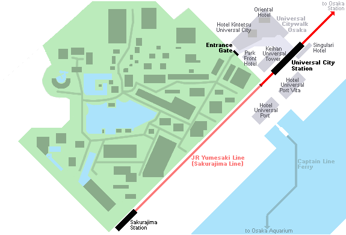
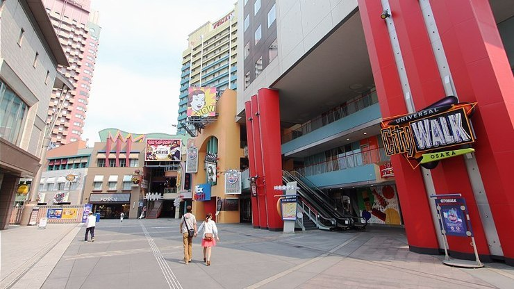

Universal Studios Japan (USJ) was the first theme park under the Universal Studios brand to be built in Asia. Opened in 2001 in the Osaka Bay Area, the theme park has been expanded over the years and is the most visited amusement park in Japan after Tokyo Disney Resort.
Universal Studios Japan currently has ten sections: Hollywood, New York, San Francisco, Jurassic Park, Waterworld, Amity Village, Universal Wonderland, Minion Park, The Wizarding World of Harry Potter and Super Nintendo World. Visitors are able to enjoy many amusement rides, ranging from child-friendly carousels to thrilling roller coasters and simulators based on popular movies such as Spiderman, Back to the Future, Terminator 2 and Jurassic Park.
In addition to rides, the theme park offers many opportunities to take pictures with popular characters' mascots such as Snoopy, Hello Kitty and the Muppets. There are also various shows put on every day, including a night parade featuring illuminated floats.
Just outside the park's gates is Universal Citywalk Osaka, a shopping mall with multiple hotels and many restaurants and shops, including stores selling Universal Studios merchandise and Osaka souvenirs. Furthermore, the Osaka Takoyaki Museum, which is essentially a collection of several popular takoyaki vendors, is located on the mall's fourth floor.
